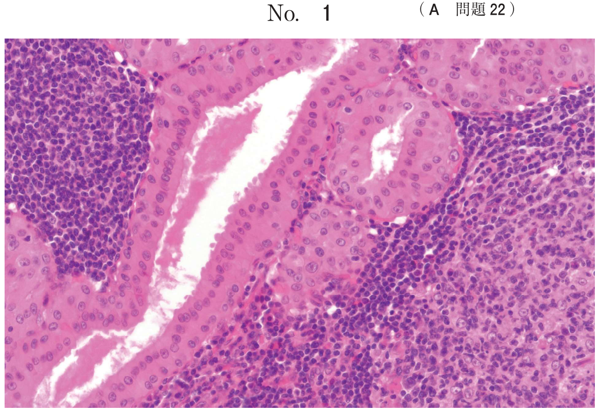
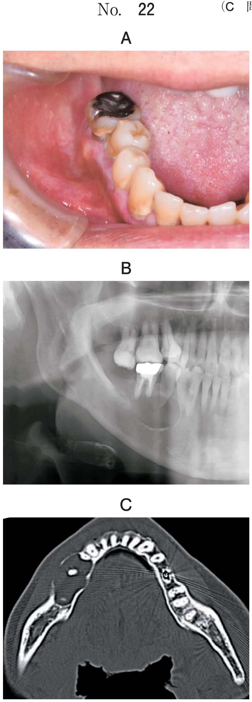
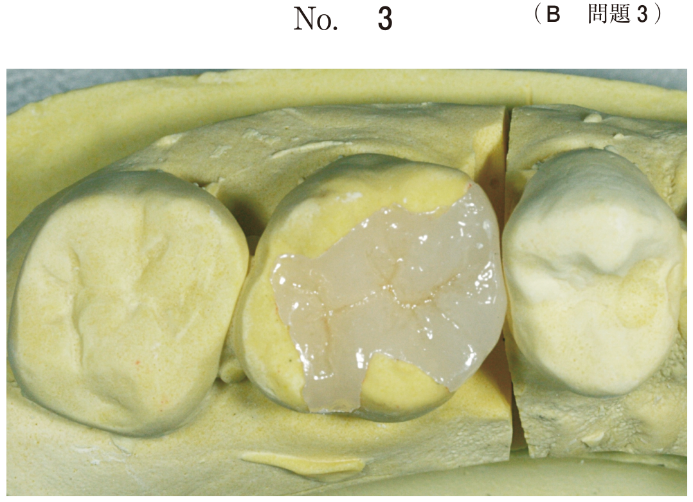

歯髄（根管系）と歯周組織は以下の経路で交通しており、一方の疾患が他方に波及することがある：
| Class | 名称 | 主たる原因 | 歯髄の生死 |
|---|---|---|---|
| Class I | 歯内疾患由来型 | 根尖性歯周炎 | 壊死 |
| Class II | 歯周疾患由来型 | 進行した歯周炎 | 生活 |
| Class III | 複合型（true combined lesion） | 両方が独立発症し連続 | 壊死 |
| 項目 | Class I | Class II | Class III |
|---|---|---|---|
| 歯髄の生死 | 壊死 | 生活 | 壊死 |
| 骨吸収パターン | U字型（患歯のみ） | V字型（全顎） | U字型（全顎） |
| 歯周ポケット（患歯） | 局部のみ | 全周 | 全周 |
| 歯周ポケット（全顎） | なし | あり | あり |
71歳の男性。上顎左側第一大臼歯の歯肉腫脹を主訴として来院した。自発痛はないが、軽度の咬合痛があるという。初診時の口腔内写真（別冊No.5A）とエックス線画像（別冊No.5B）を別に示す。
診断に必要なのはどれか。3つ選べ。

【解説】歯内-歯周疾患の診断には、歯髄の生死を判定する a 温度診、c 歯髄電気診と、歯周組織の状態を評価する d プロービングが必要。これらにより Class 分類が可能となる。b 麻酔診は原因歯の特定に用いる。e レーザー蛍光強度測定は齲蝕の検出に用いる。
73歳の男性。下顎右側第一大臼歯の違和感を主訴として来院した。1週前から自発痛があったがそのままにしていたところ、昨日から咬合痛が発現したという。プロービングデプスは遠心で7mm、その他は3mmであった。初診時の口腔内写真（別冊No.28A）とエックス線画像（別冊No.28B）を別に示す。
次に行うべきなのはどれか。1つ選べ。

【解説】「遠心で7mm、その他は3mm」という局部的な深いポケットは歯内-歯周疾患を疑わせる。Class分類を行うために、まず d 歯髄電気診で歯髄の生死を判定する必要がある。歯髄が壊死していればClass I、生活していればClass IIの可能性がある。
55歳の男性。上顎左側第二小臼歯部の咬合時の違和感を主訴として来院した。1年前から症状があったが痛みがなかったため放置していたという。歯髄電気診の結果、生活反応は認められなかった。初診時の口腔内写真（別冊No.9A）とエックス線写真（別冊No.9B）を別に示す。歯周組織検査結果の一部を表に示す。
⎿5に対してまず行うべき処置はどれか。1つ選べ。

【解説】「歯髄電気診で生活反応なし」＝歯髄壊死であり、Class I（歯内疾患由来型）または Class III と考えられる。歯内疾患由来の病変に対しては、まず c 感染根管治療を行い、ポケットの改善を経過観察する。e ルートプレーニングなどの歯周治療は根管治療後に行う。